Intelligent behavioural monitoring for healthier fish, smarter care, and peace of mind.
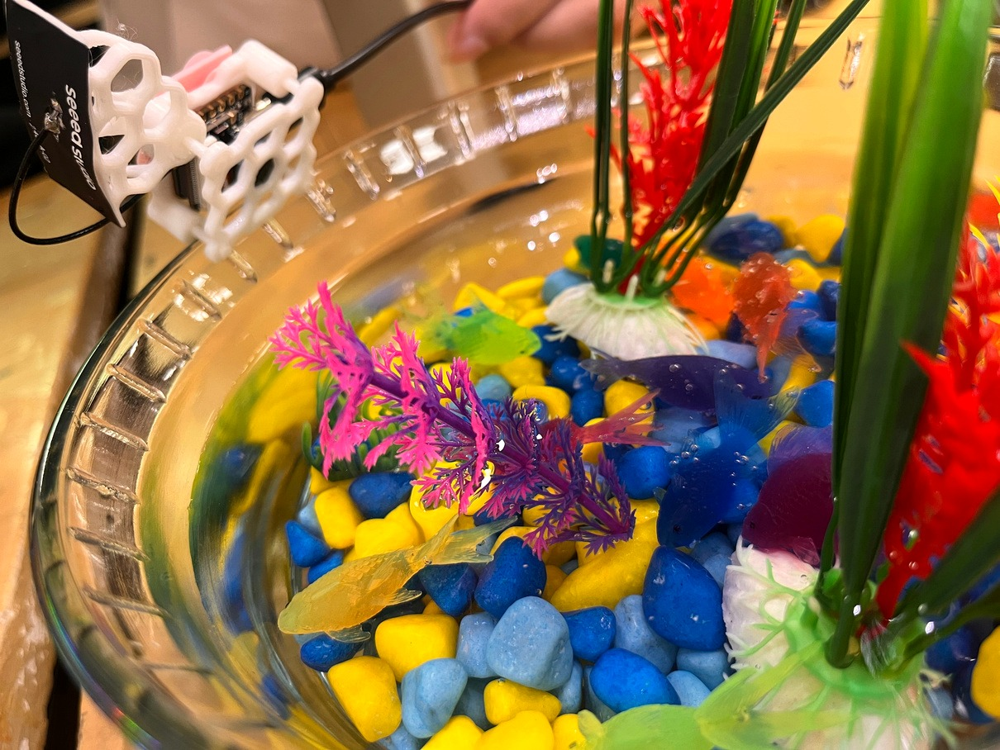
This project explored how a home aquarium could be monitored more intelligently, combining fish behaviour, camera-based observation, AI analysis, and mobile alerts into a single system, rather than leaving fish health to occasional glances and guesswork.
Aquarium owners often struggle to identify early signs of illness, stress, aggression, or abnormal behaviour in their fish. Because monitoring is largely manual and reactive, health issues are often discovered too late, leading to poor fish welfare and preventable losses.
of fish deaths are preventable with early detection of behavioural changes.
behavioural signals typically precede visible illness, but go unobserved by owners.
monitoring gap: no affordable consumer solution currently offers continuous observation.
This video communicates the problem I was exploring, told from an aquarium owner's point of view.
Fish health sits at the intersection of behaviour, water quality, human care habits, and environment. Laying this out first made it clear how many overlapping factors an owner is expected to track on their own, and where a system could realistically help.
Water chemistry already has solutions. Behaviour did not.
Owners struggle to distinguish healthy behaviour from early warning signs.
Work, travel, and sleep create blind spots where critical events occur unnoticed.
By the time symptoms are visible, treatment is costly and often unsuccessful.
Thermometers and pH strips measure water, not fish behaviour or wellbeing.
The opportunity was not simply to monitor the aquarium. It was to continuously observe fish behaviour and translate abnormal patterns into something an owner could understand and act on.
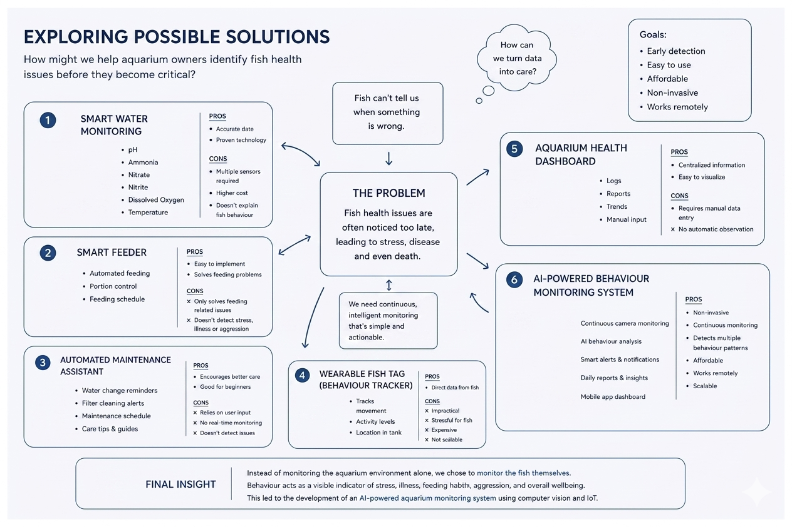
Six directions considered, from smart water sensors to a wearable fish tag, before the brief converged here: instead of monitoring the environment alone, monitor the fish themselves.
A camera in the tank feeds the backend, the backend runs inference and stores history, the app surfaces it, and the owner closes the loop by acting on what they see.
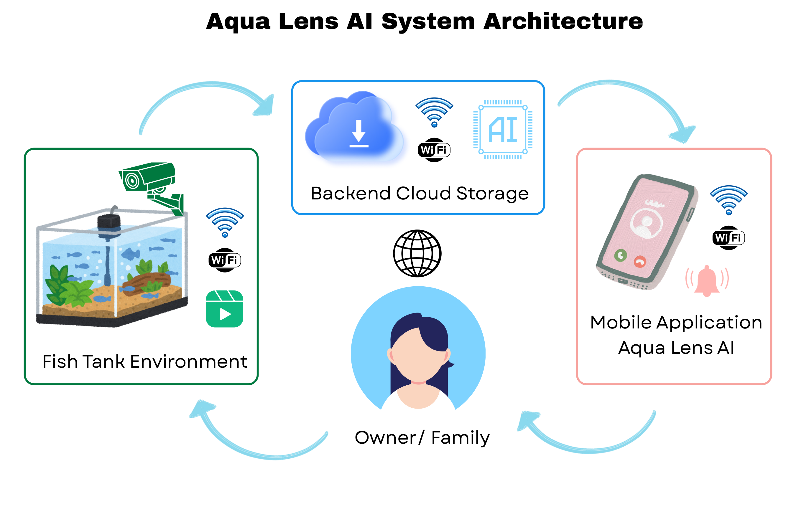
A low-power, WiFi-enabled board with a 2MP camera for continuous tank observation.
A lightweight CNN model runs on-device, detecting movement patterns and behavioural anomalies.
Real-time feed, push alerts, behavioural reports, and historical trend visualisation.
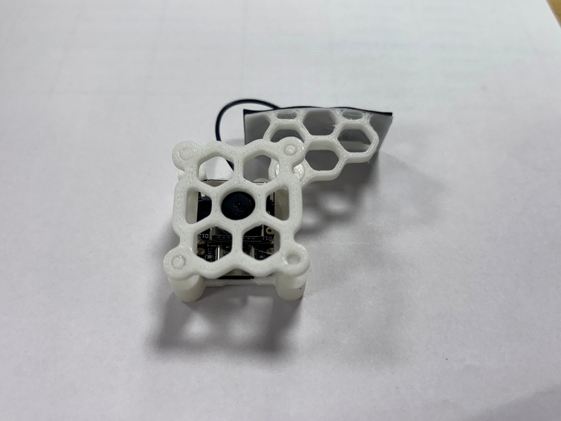
The camera module's 3D-printed housing, designed to mount above a tank while keeping the electronics dry.
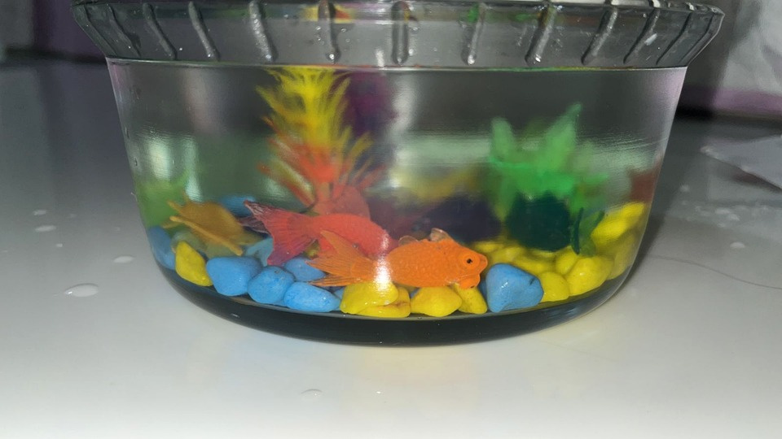
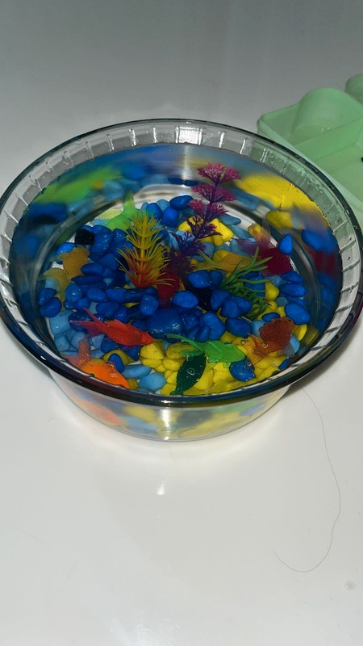
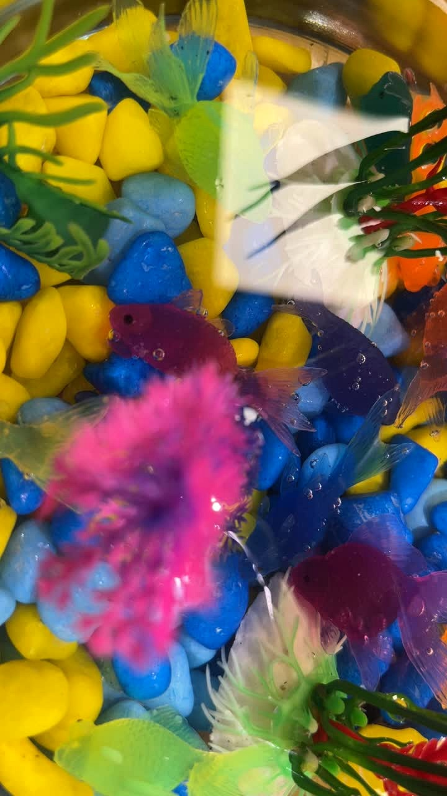
Before working with live fish, the tank and detection logic were tested on this bench rig, a small bowl with coloured gravel and toy fish standing in for the real thing. It's a student prototype, and it looks like one: the goal at this stage was validating camera framing, contrast, and the detection pipeline, not final production quality.
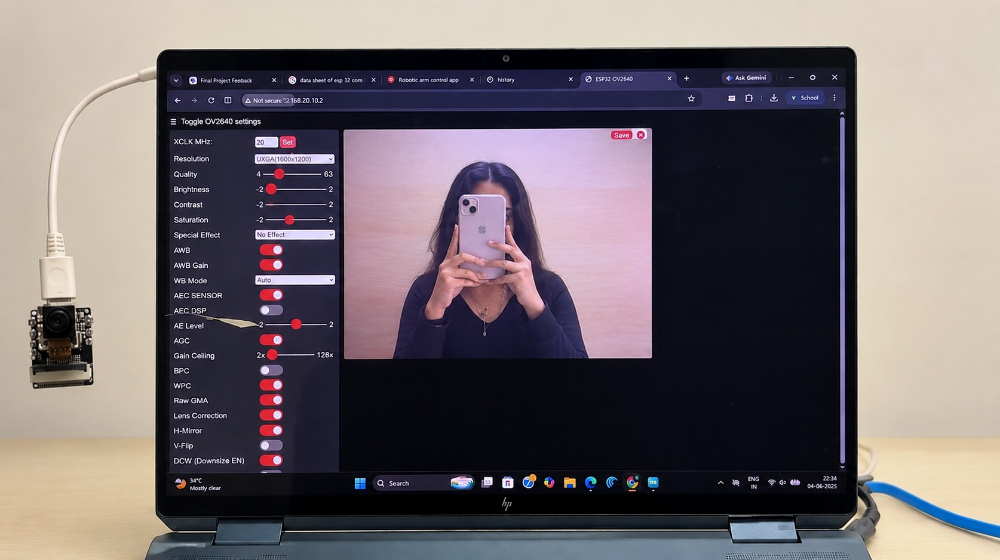
The camera was tested and calibrated for continuous tank observation and system input, tuning exposure and image settings on the live feed before it became input to the detection pipeline.
Hover each card for how it works.
Tracks surface activity spikes and rapid movement clusters during feeding windows. Confirms food consumption and flags skipped meals.
Detects chasing patterns, cornering behaviour, and sustained proximity conflicts. Alerts owners before physical harm occurs.
Identifies prolonged stillness or abnormal hiding, a signal that often precedes a more serious welfare issue.
Flags potential illness, oxygen deprivation, or environmental stress associated with prolonged stillness or abnormal hiding.
Stream directly from the ESP32-S3, accessible anywhere.
Push notifications for aggression, inactivity, or missed feeding events.
Automated summaries of activity levels, feeding consistency, and behavioural trends.
Weekly and monthly charts revealing long-term patterns and early-warning trends.
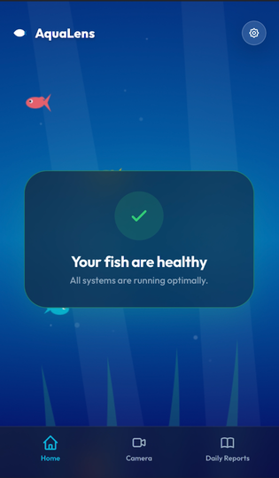
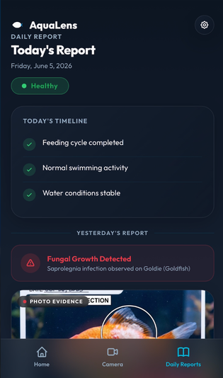
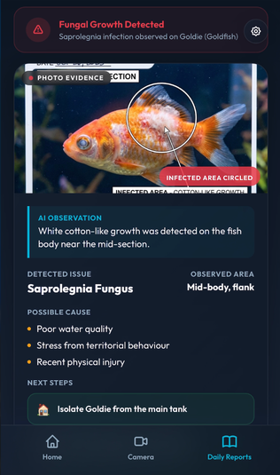
Bringing the camera, the edge model, and the app together produced a system that observes fish behaviour continuously and turns what it sees into alerts, reports, and insight an owner can actually act on.
An ESP32-S3 prototype with feeding and inactivity detection, plus basic mobile alerts, always-on observation with zero extra effort from the owner.
Feeding, aggression, inactivity, and infections, detected automatically as the AI analysis layer expands beyond the MVP.
These are the intended next steps for the project, not outcomes that have been validated in a real deployment yet.
This project was a design exploration into how computer vision and behavioural monitoring could make aquarium care more proactive, and less dependent on constant manual observation. It moved through physical computing, on-device AI, and mobile design as one connected system, built and tested end to end as a working student prototype.